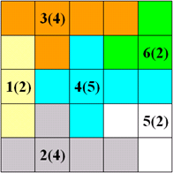

Problem I
Irrigation
You have a piece of land, which is divided into an n*m grid. In some squares there
is a water source capable of providing water for a certain number of other squares. A water source
can provide water for zero or more consecutive squares directly to the north, zero or more consecutive
squares directly to the east and so on.
Water is precious, so you have just enough water to irrigate the whole piece of land. So it's
crucial to design an irrigation system so that every square is either a water source or irrigated by exactly one water source.
Here is an example. Water sources are represented in the form id(water). So the 4-th water is
capable of provide water for 5 other squares.

Input
The input consists of at most 50 test cases. Each case begins with a line containing three
non-negative integers n, m and k (1 <= n,m <= 30, 1 <= k <= 200),
where k is the number of water sources. In the following k lines water sources are
described, by three non-negative integers x, y, c(1 <= x <= n, 1 <= y <= m),
the coordinate and water capacity (west-south corner is (1,1)), one line for each water source.
It is guaranteed that nm - k = c1 + c2 + ... + ck (just enough water). The last case is followed by a single zero, which should not be processed.
Output
For each test case, print the case number in the first line, then k lines followed,
one for each water source. Each water source is described by four non-negative integers n, e, s, w,
the amount of squares irrigated in each direction. It is guaranteed that at least one solution exists.
Print a blank line after each test case.
Sample Input
2 2 2
1 1 1
2 2 1
5 5 6
1 3 2
2 1 4
2 5 4
3 3 5
5 2 2
5 4 2
0
Output for the Sample Input
Case 1:
1 0 0 0
0 0 1 0
Case 2:
1 0 1 0
1 2 0 1
0 2 1 1
1 2 1 1
0 0 1 1
1 0 0 1
Rujia Liu's Present 2: A Big Contest of Brute Force
Adapted from Winter Camp in Yugoslavia 2001